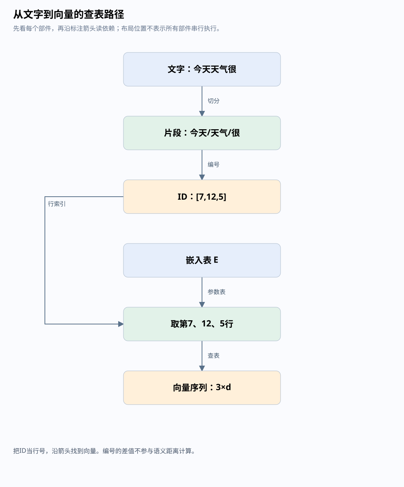

第2章 · 文本、分词与向量表示
本章开篇生活情境与衔接为编辑教学改写，借鉴原视频从经历引出概念的讲解方法，不是作者原话；原视频线索与论文见下方对应段落。
先看一件具体的事
聊得来，是因为编号靠得近吗？
编号、向量、相似度是三件事 · 点击可放大先看这个场景
假设你在做一个交友推荐。一个人喜欢同一支乐队，也喜欢你刚看的电影，你会觉得：我们大概有很多共同语言。可如果系统只知道你是第17号、对方是第18号，另一个人是第900号，它能因为17和18挨着，就认为你们更合适吗？
问题出在哪里
不能。编号只负责把人区分开。给每人发一张不同的号码牌，并没有告诉系统谁喜欢什么。原视频用交友推荐引出Embedding，好懂的地方就在这里：先让你看见“只有身份，没有关系”的问题，再讨论如何表示相似。
模型怎样处理
语言模型也要先处理身份。文字先被分词器切成token，再变成ID。这里的token不一定恰好是一个汉字或一个完整词。你可以把分词看成把句子装进一排小格子，把ID看成格子的标签。具体怎么切，要由这个模型配套的分词器决定。
再看一个变化
接下来才轮到Embedding：每个ID查到一串可学习的数。这些数不是系统凭空宣布的“真实含义”，而是在训练任务中逐渐形成的表示。经常处在相关语境里的词，有机会学到某些相近的特征；训练目标不同，学出来的关系也会不同。
放回完整流程
再回到交友。两个人在电影、音乐这两项上很接近，不代表在生活节奏、金钱观、冲突处理上也接近。高维向量压到二维图上，就像只留下其中两项：画面更直观，信息也会丢。图上的两点很近，值得进一步了解，却不能代替完整判断。
回到开头
所以这一章要分清三个东西：名字或编号用来找人，向量用来表示特征，相似度用来比较某一种表示。后面注意力、图文匹配、检索都会用到它们。我们先用两个小向量，亲眼看看“方向接近”是什么意思。
这一章怎么读先带着上面的问题往下看。每个概念先用白话接上情境，再给计算；遇到公式可以先看旁边的例子。动手实验和答案直接展开，论文留在相应概念后，想追根究底时再点开。
先动手试一试 → 2.1 带着问题进入模型
在语言模型里，分词和Embedding位于入口：先把文字变成可查找的ID，再变成参与计算的向量。后面Attention处理的，正是这些向量逐步形成的表示。
先沿箭头看懂：从文字到向量的查表路径

把ID当行号，沿箭头找到向量。编号的差值不参与语义距离计算。2.2 先补 Tokenizer
文字也要先有号码牌。把“机器学习”切成哪些片段，是分词器的工作；给片段编号只是方便查找。不要从号码相差多少，猜它们的意思相差多少。
文本先被分成token，再映射到ID；token未必是一个汉字、一个单词。分词器决定输入离散单位，Embedding决定其向量表示。
把刚才的直觉一步步算出来
文本不是直接送进神经网络的。分词器先按既定词表与算法把文本切成token，再把token映射为整数ID。token可能是完整词、子词、单字或字节片段，不存在通用的“一个汉字等于一个token”规则。
BPE与Unigram是常见的子词建模思路，SentencePiece是支持多种子词处理方式的工具与研究入口，不能把工具名和一种唯一算法画等号。分词器通常不是每次对话临时重新训练，而是与模型配套固定使用。
例如玩具词表包含“机器”“学习”“机”“器”，同一文字采用哪一分解由该分词器规则决定。编号17和18之间数值接近，不表示两个词语语义接近；Embedding查表后的向量才参与后续计算。
训练与推理必须保持词表、特殊token与ID映射一致。同一段文本在不同模型中token数量可能不同，所以长度、截断、上下文窗口与成本都要按对应分词器计算。此例只解释机制，不冒充任何实际模型的真实分词输出。
换你试一次：先猜，再算
玩具分词结果为[机器, 学习]，ID=[7,12]，嵌入矩阵第7行[1,0]、第12行[0,2]。输入向量序列是什么？可否由ID差5推断语义距离？
参考答案与计算结果
向量序列[[1,0],[0,2]]；不能。ID只是索引，距离应由表示与任务定义。
这个类比帮到哪里，停在哪里
不是对作者视频正文的归纳，也不表示作者从未讲过该内容。
2.3 Embedding：从编号走向可学习的表示
现在号码牌有了，系统还不知道谁和谁更像。给每个编号配一串可学习的特征，就是下面的Embedding。先看查表，再看相似度，最后看压成二维为什么会漏信息。
token ID只是离散编号；embedding把编号映射成可学习向量，后续网络再产生随上下文变化的表示。
把刚才的直觉一步步算出来
假设词表只有“猫、狗、树”，ID为0、1、2。嵌入矩阵E有3行，每行是一个向量。输入ID=1相当于选E的第二行；编号1本身不意味着“狗比猫大一点”。
如果用向量u=[1,0]、v=[1,1]，余弦相似度(u·v)/(||u||||v||)=1/√2≈0.707。向量整体乘正数不改变余弦，但会改变未归一化的点积。相似性由表示和训练目标定义，不能自动翻译为现实世界的“灵魂相似”。
初始token嵌入与上下文表示要分清：同一个token进入模型时可查到同一行，但经过注意力层后，会随周围上下文改变。把高维向量画到二维时又多一次信息压缩。
换你试一次：先猜，再算
将v=[1,1]改成[10,10]，点积与余弦分别怎么变？
参考答案与计算结果
对u=[1,0]，点积从1变10；余弦仍为1/√2。
这个类比帮到哪里，停在哪里
嵌入不必等同于降维；训练目标、上下文、向量空间都会影响相似性。Word2vec是历史入口，不等于现代LLM完整结构。
关联视频 · 已取得完整音轨并完成本机自动转写；本节综合转写与页面摘要改写，术语和个别片段尚未逐秒校对。
动手看看：只改一个条件，会发生什么？
把两个向量慢慢转向同一方向，再转开。先看余弦怎样变化，然后想：这个数字回答的是“这些特征像不像”，还是“这两个人所有方面都合适”？
想亲手复现，就运行这段小实验
本例是编辑编写的教学计算，不是作者实验的代码复刻。先把 common.py 与本章脚本下载到同一个目录，再执行 python3 02_embeddings.py。只使用Python标准库。
from common import VOCAB, E, dot
import math
ids = [VOCAB.index(t) for t in ['今天', '天气']]
print('IDs:', ids, 'embeddings:', [E[i] for i in ids])
u, v = [1,0], [1,1]
cos = dot(u,v)/math.sqrt(dot(u,u)*dot(v,v))
print('cosine:', round(cos,6))
print('scaled cosine:', round(dot(u,[10,10])/math.sqrt(200),6))
assert abs(cos-1/math.sqrt(2))<1e-12
实际运行输出
IDs: [0, 1] embeddings: [[1.0, 0.0], [0.0, 1.0]]
cosine: 0.707107
scaled cosine: 0.707107
先不急着读完每一行代码。找到输入、这次改变的量和最后输出，按上面的例子预测一次，再运行核对。若结果和直觉不同，打印中间值，看看差异从哪一步开始。
回到开头，你能解释了吗？
把token编号从17换成900，是否必然改变它表达的语义？
只按电影和音乐画出来的相似图，为什么不能代表一个完整的人？
用自己的话讲给一个没读过这一章的人听。能把问题、过程和结果接起来，再看公式就会容易一些。